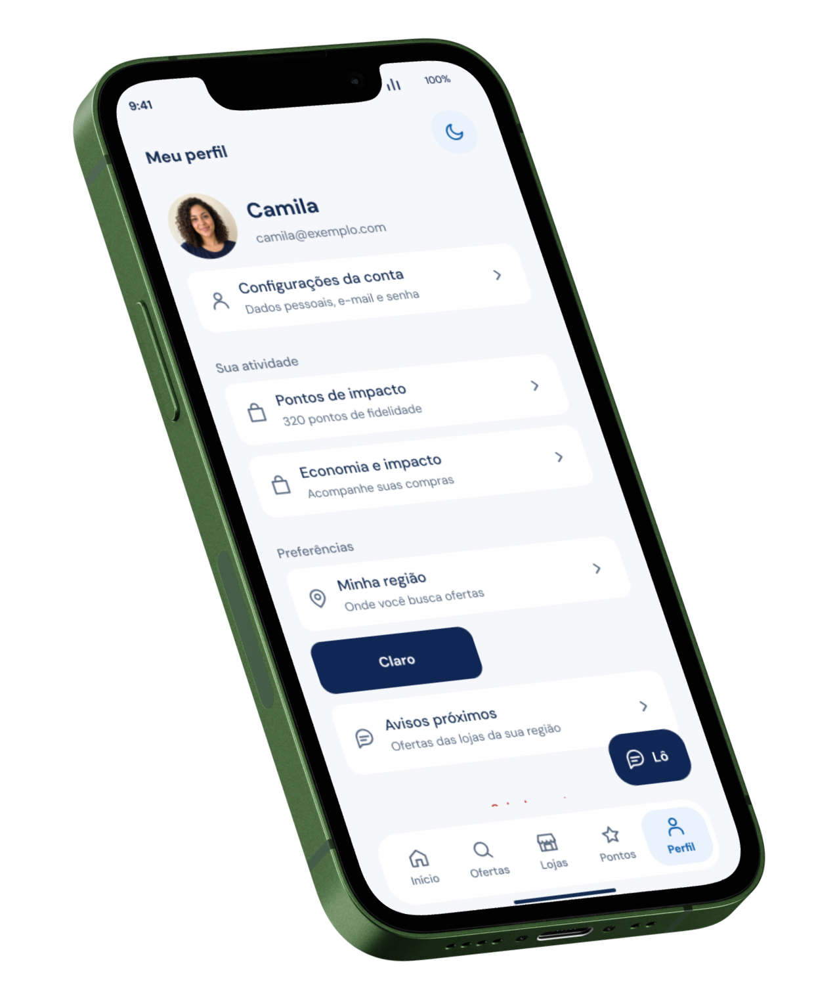
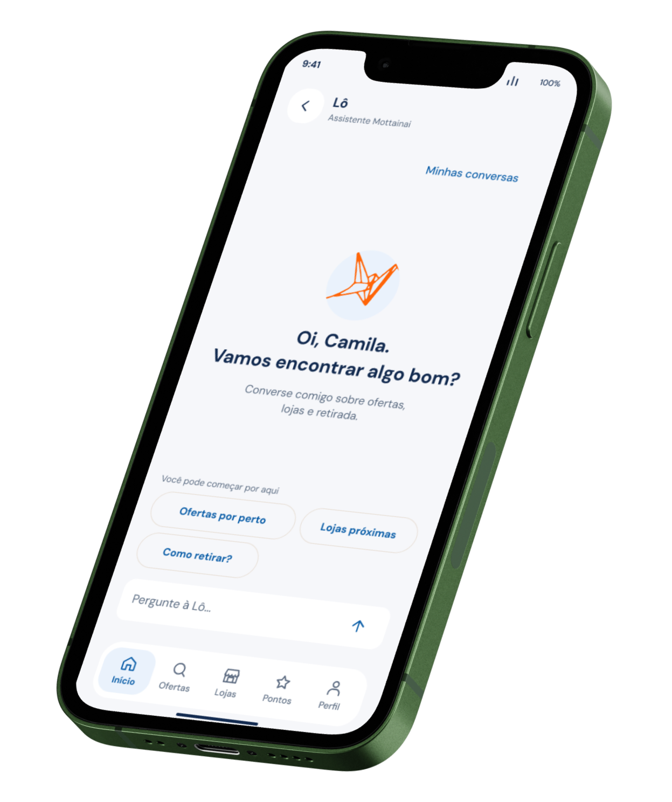
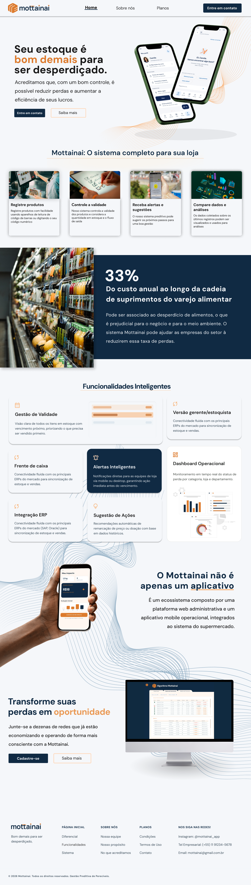
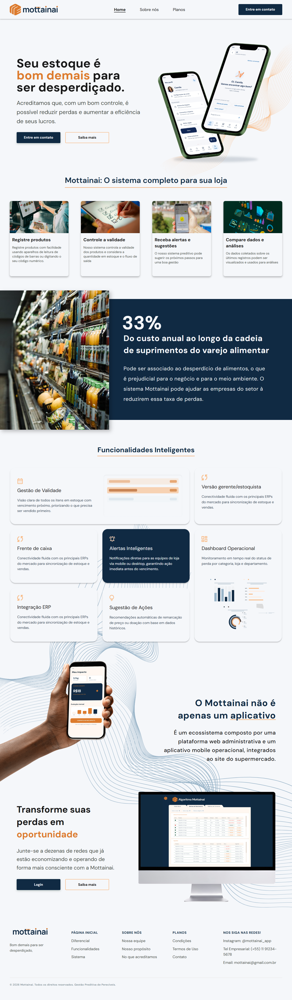
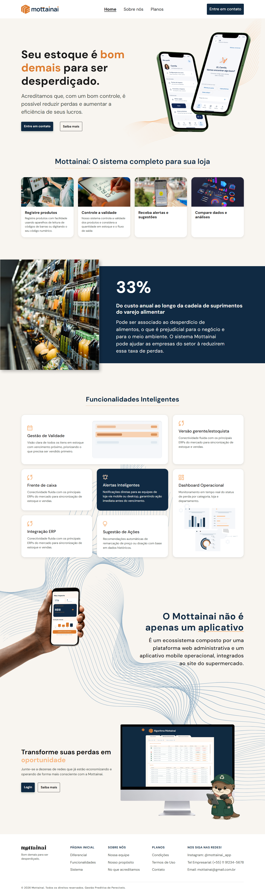

Perfil no celular esquerdo, Lô no direito e Alertas Preditivos no monitor. As diferenças anteriores de layout foram preservadas. A tela desktop é exibida integralmente, com escala proporcional e faixas laterais necessárias.




